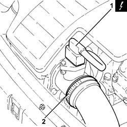
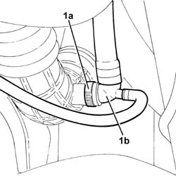
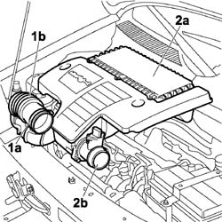
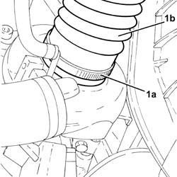
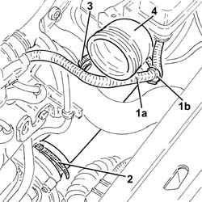
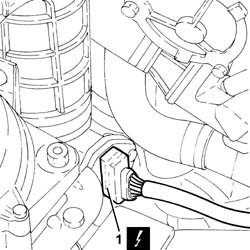
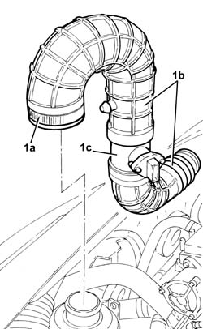

1048A50 air inlet pipe to turbo charger - r + r
- Path
- Procedures > 10 ENGINE > 1048 ENGINE AIR SUPPLY CIRCUIT > 1048A VACUUM AIR CIRCUIT > 1048A50 air inlet pipe to turbo charger - r + r
- Kind
- repair procedure (removal / refitting; the operation number is the code)
- Applies to
- all engines; all production periods
- Interactive page
- https://sloeber94.github.io/elrnDB-fDbl/en/#/2584399
Applies to: all engines; all production periods
 Removing
Removing
 Refitting
RefittingEnsure that the ignition key is in the OFF position, then disconnect the negative battery terminal.
 | Name | Connector |
|---|---|---|
- | Battery | A1 |
Carry out 5530B10 battery - r+r .
Carry out 5530B52 Battery DRIP TRAY/SUPPORT - R.R. .
1. Disconnect the electrical connection from the air flow meter.
| Name | Connector |
|---|---|---|
1 | Air flow meter | K41 |
2. Loosen the band and disconnect the the turbocharger air inlet sleeve from the rigid pipe, air flow meter side.

Applies to: all engines; all production periods
Removing
RefittingPosition the vehicle on the ramp.
Proceed with the removal 5530B10 battery - r+r .
Proceed with the removal 5530B52 Battery DRIP TRAY/SUPPORT - R.R. .
Proceed with the removal 7055B54 under-engine guard - r r .
1. Loosen the band (1a) and disconnect the T-connector (1b) from the turbocharger air inlet duct.

Applies to: all engines; all production periods
1. Loosen the band (1a) and disconnect the flexible hose (1b) from the air intake.
2. Remove the air filter (2) complete with air flow meter (2b) by releasing from the underlying pins and then from the rear fastening.

Applies to: all engines; all production periods
1. Loosen the band (1a) and disconnect the turbocharger air inlet duct (1b), turbocharger side.

Applies to: all engines; all production periods
1. Release the electrical wiring (1a) from the band (1b).
2. Loosen the band fastening the air intake hose to the turbocharger, turbocharger side.
3. Loosen the band fastening oil vapour hose between the rigid pipe and the turbo inlet hose, turbo inlet hose side.
4. Disconnect and remove the turbocharger inlet hose.

Applies to: all engines; all production periods
1. Disconnect the electrical connection from the air flow meter.
| Name | Connector |
|---|---|---|
1 | Air flow meter | K41 |

Applies to: all engines; all production periods
Refitting
RemovingRefit the air inlet duct in its seating and connect it to the turbocharger.
Tighten the band fastening the oil vapour hose between the rigid pipe and the turbo inlet hose, turbo inlet hose side.
Tighten the band fastening the turbocharger air inlet hose, turbocharger side.
Secure the electrical wiring to the band.
Place the air flow meter in its housing on the air filter and secure it using the bolts.
Refit the air filter complete with air flow meter, securing it to the rear attachment and then the underlying pins.
Connect the flexible hose to the air intake on the crossmember and tighten the fixing band.
Connect the air intake sleeve to the turbocharger, air flow meter side, and tighten the band.
Connect the electrical connection to the air flow meter.
| Name | Connector |
|---|---|---|
- | Air flow meter | K41 |
Carry out 5530B52 Battery DRIP TRAY/SUPPORT - R.R. .
Carry out 5530B10 battery - r+r .
Connect the battery negative terminal.
| Name | Connector |
|---|---|---|
- | Battery | A1 |
Applies to: all engines; all production periods
1. Loosen the band (1a) and remove the turbocharger air inlet ducts (1b) complete with air flow meter (1c).

Applies to: all engines; all production periods
Refitting
RemovingRefit in their seatings the turbocharger air inlet ducts complete with air flow meter, and tighten the band.
Connect the electrical connection to the air flow meter.
Connect the turbocharger air inlet duct, turbocharger side, and tighten the band.
Connect the T-connector to the turbocharger air inlet duct and tighten the band.
Proceed with the refitting 7055B54 under-engine guard - r r .
Proceed with the refitting 5530B52 Battery DRIP TRAY/SUPPORT - R.R. .
Proceed with the refitting 5530B10 battery - r+r .
Remove the car from the ramp.